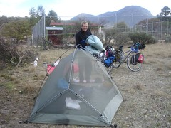
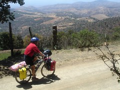

Riding to Guanajuato
By nancy - Posted on May 1st, 2007
Tagged: Inuvik to Ushuaia
Here it was the end of March in Mexico and we had been riding for two months. The weather was great: no rain, the temperature was perfect somewhere in the seventies, sunny. All the things a bicycle tourist would want. But the wind kicked up every day around 11:00, a couple of hours into our day and hearing traffic difficult to hear in windy conditions so we decided to take a quiet dirt road which someone had described as a beautiful ride and “a good training road”. Um.. sounded interesting. We headed down the road not knowing what it was going to be like but we did know it would get us to Guanajuato.
It was a wonderful road with all the things we love. It wound its way up through a forested canyon on a good dirt road. There was so little traffic that we could let our minds wander or put on our head phones and rock to music as we rode.
Camping on the way to Guanajuato
When dark came we asked a couple who were milking an unwilling cow if we could camp in their field. They replied that the bulls might bother us, but that we could camp next to the one-room community school. We spent a peaceful night in the canyon with only the sounds of cows and one stray dog that came to investigate us.
Let me stray from the story for a second: We have noticed something very strange about the dogs here in Mexico. The local dogs know we are strangers and in the middle of the night they come up to the tent and growl or bark at us for a long time. One dog chewed one of the straps on our tent. We figured out that if we yell at them or go out and pretend to throw something at them, they go away. When we are riding and they chase us we can usually yell at them and they stop. If not, I use water bottle to squirt water at them. They are so dumbfounded they stop and investigate the water. Really dumbfounded. Now back to my original story.
In the morning the old grandfather came to our campsite with his 3 year old grandson, sat on a stump in the field we were camping and watched us as we finished packing up. He was just a curious old man and wanted to come see the stranger how are just crazy enough to ride their bikes up this mountain canyon. As we left we all shook hands and wished each other good luck.
Randy riding above Guanajuato
The ride that day was steep and hot. There seemed to be a lot of 10% grades on the first half of the day and it felt like I walked half of it. Randy would ride ahead and then wait for every few miles. Once and a while when I would catch up with him he would be sitting there with company. Someone would come up to him as he waited and ask him lots of questions.
Questions most frequently asked are: Where are you going? Adonde Va? Which we usually answer the name of the place we will stop for the night. From where are you coming from? De Donde es? We can not figure out if they mean today or the start of our trip, so we say where we started from that morning. This usually impresses them. How many days have you been? Currently we say 8 months. How far do you ride in a day. 50 to 80 kilometers. Why don’t you go by car, it is easier. Where do you stay at night? Do you like Mexico? Do you like Bush? How long is your trip? When we answer two more years. At that point they smile and call us crazy or some even invite us home for more talk and to meet their family and neighbors.
The other side of the mountain was void of trees, a dry desert with red soil and plenty of blooming cactus. The houses were made out of handmade adobe bricks of the same color and the horses blended in. We rode down the steep road thankful we did not have to climb it. When we finally got back to civilization, I looked back and was amazed we could descend a dirt road of that grade. It looked like the road could just fall off the mountain and pull everything with it.

It was a wonderful road with all the things we love. It wound its way up through a forested canyon on a good dirt road. There was so little traffic that we could let our minds wander or put on our head phones and rock to music as we rode.

Camping on the way to Guanajuato
Let me stray from the story for a second: We have noticed something very strange about the dogs here in Mexico. The local dogs know we are strangers and in the middle of the night they come up to the tent and growl or bark at us for a long time. One dog chewed one of the straps on our tent. We figured out that if we yell at them or go out and pretend to throw something at them, they go away. When we are riding and they chase us we can usually yell at them and they stop. If not, I use water bottle to squirt water at them. They are so dumbfounded they stop and investigate the water. Really dumbfounded. Now back to my original story.
In the morning the old grandfather came to our campsite with his 3 year old grandson, sat on a stump in the field we were camping and watched us as we finished packing up. He was just a curious old man and wanted to come see the stranger how are just crazy enough to ride their bikes up this mountain canyon. As we left we all shook hands and wished each other good luck.

Randy riding above Guanajuato
Questions most frequently asked are: Where are you going? Adonde Va? Which we usually answer the name of the place we will stop for the night. From where are you coming from? De Donde es? We can not figure out if they mean today or the start of our trip, so we say where we started from that morning. This usually impresses them. How many days have you been? Currently we say 8 months. How far do you ride in a day. 50 to 80 kilometers. Why don’t you go by car, it is easier. Where do you stay at night? Do you like Mexico? Do you like Bush? How long is your trip? When we answer two more years. At that point they smile and call us crazy or some even invite us home for more talk and to meet their family and neighbors.
The other side of the mountain was void of trees, a dry desert with red soil and plenty of blooming cactus. The houses were made out of handmade adobe bricks of the same color and the horses blended in. We rode down the steep road thankful we did not have to climb it. When we finally got back to civilization, I looked back and was amazed we could descend a dirt road of that grade. It looked like the road could just fall off the mountain and pull everything with it.